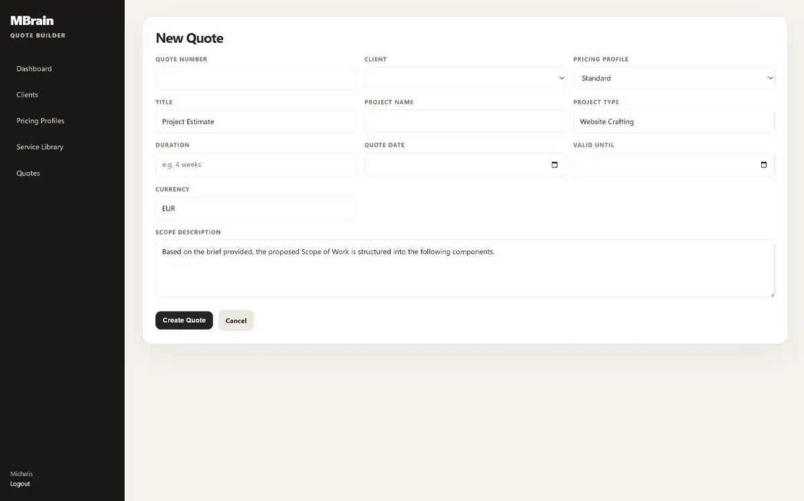
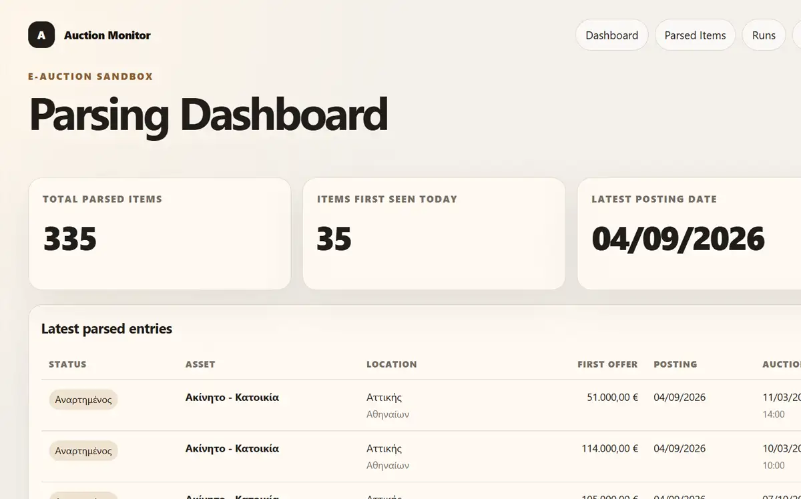

01Thought
Challenge the requested solution and establish the business need, users, value and constraints underneath it.
03 / Digital Products & Platforms
An idea, a feature list and a development team are not yet a product structure
I help turn the business need into users, journeys, rules, priorities, integrations and a blueprint that UX, UI and development teams can work from without inventing the product separately.
The missing decisions are usually the expensive ones
A platform can sound straightforward at the business level and become complicated the moment users, permissions, states, integrations, exceptions and operational rules appear.
I work through those connections early, give the product a coherent structure and keep the business need visible while design and development get more detailed.
Challenge the requested solution and establish the business need, users, value and constraints underneath it.
Define journeys, rules, features, information architecture, dependencies, integrations and a product structure people can discuss properly.
Stay close to UX, UI and development so the product that gets implemented still reflects the decisions made at the beginning.

An internal quoting product built around real commercial logic rather than a static document template. It handles roles, hours, recurring items, optional items, platform fees, clients, projects, quote numbering and proposal output.
The useful part is the structure behind the screens: what is editable, what is calculated, how options behave and how a quote remains consistent from administration through to the client-facing proposal.

A parser designed to collect auction website information and turn it into structured data that can be processed, compared or used elsewhere.
The product problem is larger than scraping a page. The useful output depends on deciding what information matters, how different source structures map to one model and how the resulting data will actually be used.
Internal platforms, customer portals, operational tools, SaaS concepts, booking or transaction products, content and data products, and legacy processes that need to become a usable digital system.
Turn a business idea or requirement set into the structure UX and UI need in order to begin properly.
Own product logic and architecture while specialists design the detailed user experience and interface.
Stay involved as technical questions and edge cases appear, keeping decisions connected to the original business need.
An idea. A problem. A project that already exists. Bring me what you have and let’s work out what comes next.
Start a conversation →